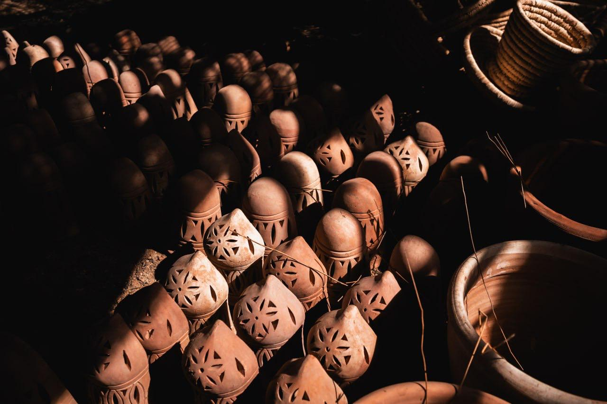
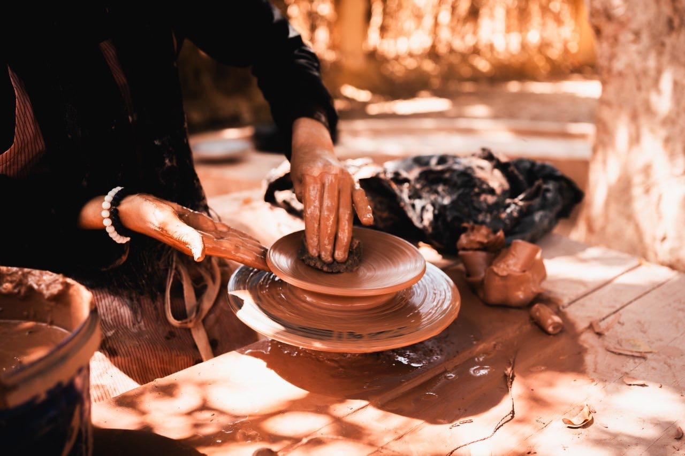
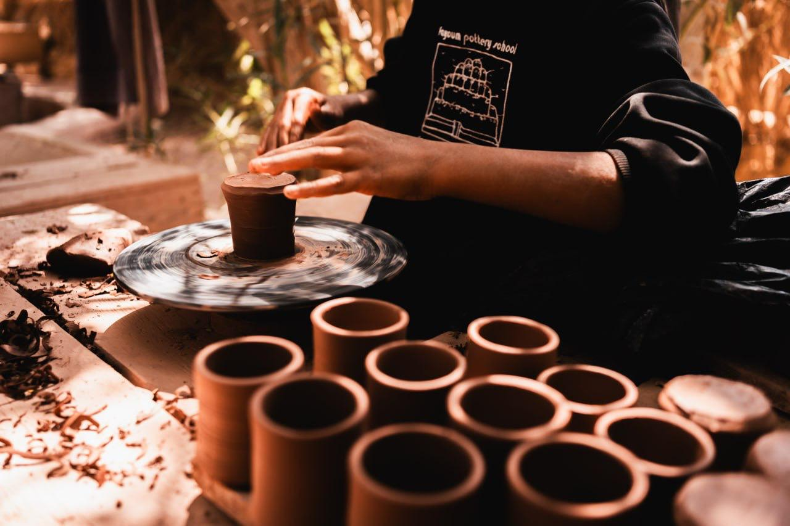

Our Gallery



The village Tunis is located in Egypt and is one of the villages of
Youssef Al-Siddiq Centre in Fayoum governorate.
The village of Tunisia is beautiful in nature, situated on top of the
land. Underneath it are beautiful green farmland, then Lake Qarun, and
north of the lake are mountain ranges.


